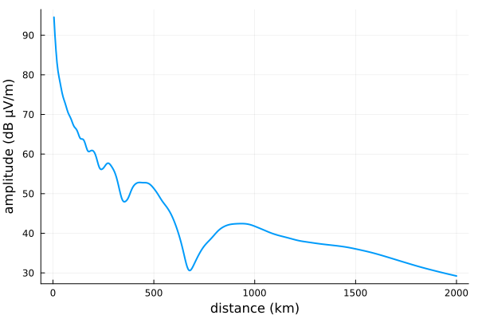

LongwaveModePropagator.jl
Model the propagation of VLF radio waves in the Earth-ionosphere waveguide.
Longwave Mode Propagator is a mode-theory propagation model written in the Julia programming language. The model is largely based on the work of K. G. Budden, who developed both a convenient means of calculating an effective reflection coefficient for the anisotropic ionosphere (Budden, 1955) and a general method for calculating the electric field produced by a source dipole in the Earth-ionosphere waveguide (Budden, 1962). It is similar to the Long Wavelength Propagation Capability (LWPC), but aims to be more robust and adaptable.
The package is most easily used when interfacing with it from Julia, but it can also run simple cases by reading in JSON files and writing the results back to JSON. See the Examples section of these docs for examples of building scenarios and running the model from within Julia or for generating compatible files from Matlab and Python.
Installation instructions
- Download and install a recent version of Julia for your operating system.
- From the Julia REPL, install LongwaveModePropagator.
julia> ]
(@v1.5) pkg> add LongwaveModePropagatorIf you'll be working primarily in Julia, you probably want to cd to your working directory, ] activate a new environment, and then add LongwaveModePropagator.
Julia has an excellent built-in package manager (accessed by typing ] from the REPL) that keeps track of the versions of all dependencies within an environment. This means you can leave your code, come back to it two years later on a new computer, and as long as you have the original Project.toml and Manifest.toml files, you can instantiate the exact environment you were last working with. To update the environment (while maintaining compatibility across all dependencies), simply ] up.
As with most Julia packages, LongwaveModePropagator is released under the MIT license and all source code is hosted on GitHub. Please open Issues if you find any problems or are interested in new features, or Pull requests if you would like to contribute.
Running your first model
Here's a simple homogeneous ground/ionosphere scenario defined in Julia.
using LongwaveModePropagator
using LongwaveModePropagator: QE, ME
# "standard" vertical dipole transmitter at 24 kHz
tx = Transmitter(24e3)
# sample vertical electric field every 5 km out to 2000 km from tx
rx = GroundSampler(0:5e3:2000e3, Fields.Ez)
# vertical magnetic field
bfield = BField(50e-6, π/2, 0)
# daytime ionosphere
electrons = Species(QE, ME, z->waitprofile(z, 75, 0.35), electroncollisionfrequency)
# "typical" earth ground
ground = Ground(10, 1e-4)
waveguide = HomogeneousWaveguide(bfield, electrons, ground)
# return the complex electric field, amplitude, and phase
E, a, p = propagate(waveguide, tx, rx);We can plot the results if we ] add Plots:
using Plots
plot(rx.distance/1000, a, xlabel="Distance (km)", ylabel="Amplitude (dB μV/m)")
SI units (MKS) and radians are used throughout LongwaveModePropagator.
The only exception in the current version of the package is the use of kilometers and inverse kilometers to define Wait and Spies $h'$ and $\beta$ parameters for the electron density profile in the function waitprofile. In practice, the units of these parameters are often implicitly taken to be kilometers and inverse kilometers.
Users are encouraged to browse the Examples section for more complex scenarios.
New to Julia?
Julia is a relatively new general programming language that shines for technical computing. It has similarities to Matlab and Python, but is high performance and attempts to solve the "two language problem". In part, it achieves its high performance by compiling functions to efficient native code via LLVM. Julia is dynamically typed and uses multiple dispatch, so that the first time a given function is passed arguments of a certain type, the function is compiled for those types. In practice, this means that the first time a function is called, it takes longer than it will on subsequent calls, because at the first call the function also had to be compiled.
Finding help
I highly recommend reading the Julia Documentation. It is very thorough and combines significant textual explanations with examples.
Besides the regular REPL prompt julia> and the package mode accessed with ], there is also a help mode accessible with ?. The help functionality works "automatically", even for user-defined functions with docstrings. Most internal functions of LongwaveModePropagator are documented, so e.g.
? LongwaveModePropagator.bookerquarticprints an explanation of the LongwaveModePropagator.bookerquartic function even though it's not exported from the package.
References
K. G. Budden, “The numerical solution of differential equations governing reflexion of long radio waves from the ionosphere,” Proc. R. Soc. Lond. A, vol. 227, no. 1171, pp. 516–537, Feb. 1955, doi: 10.1098/rspa.1955.0027.
K. G. Budden, “The influence of the earth’s magnetic field on radio propagation by wave-guide modes,” Proceedings of the Royal Society of London. Series A. Mathematical and Physical Sciences, vol. 265, no. 1323, pp. 538–553, Feb. 1962, doi: 10.1098/rspa.1962.0041.